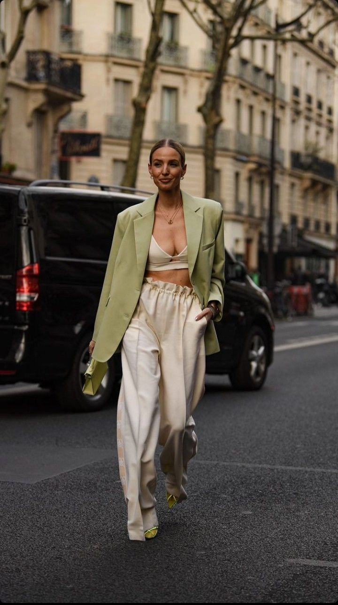
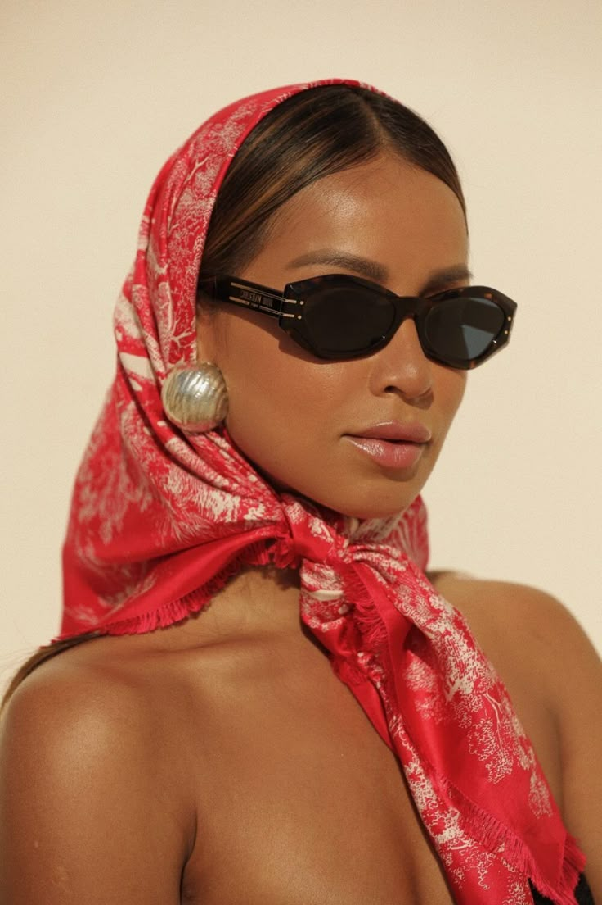
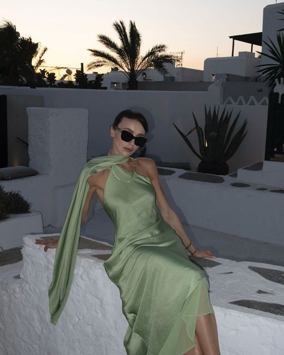
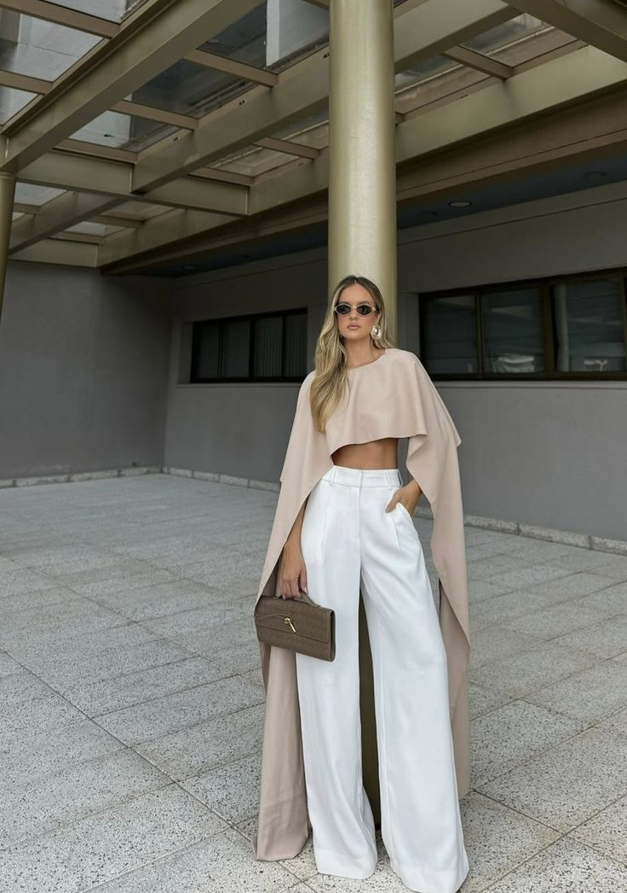
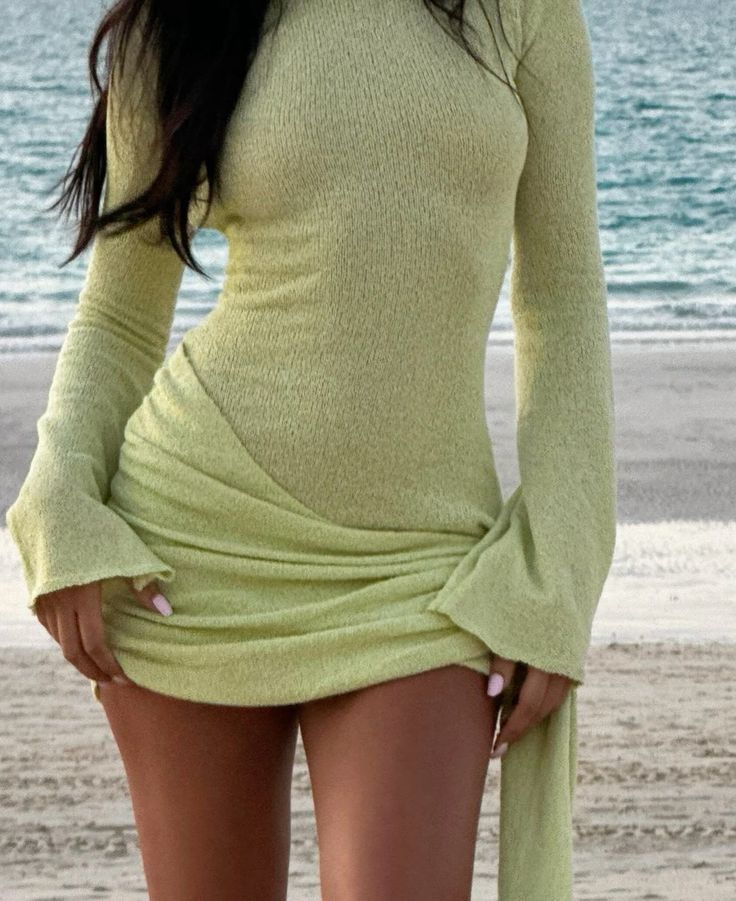
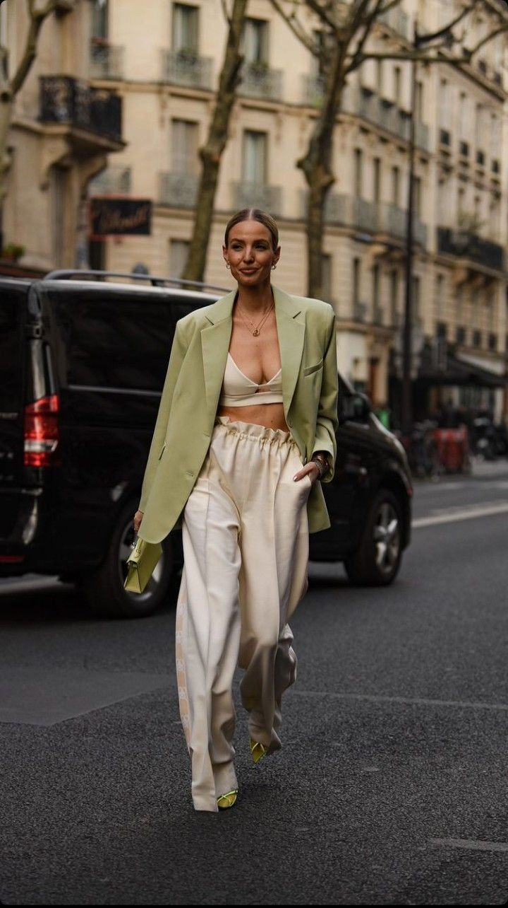
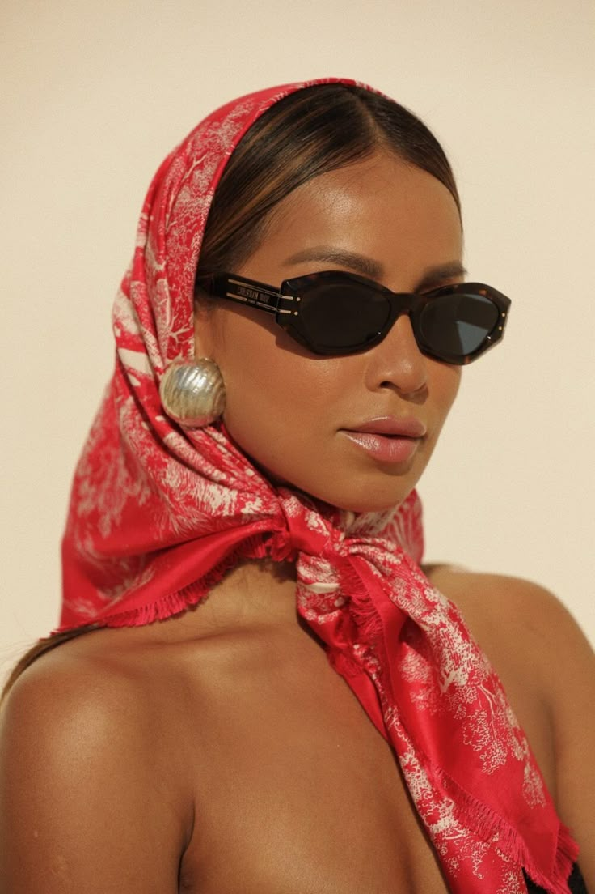
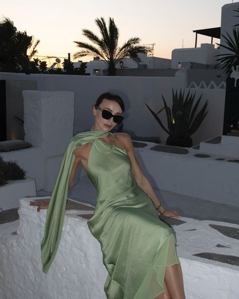
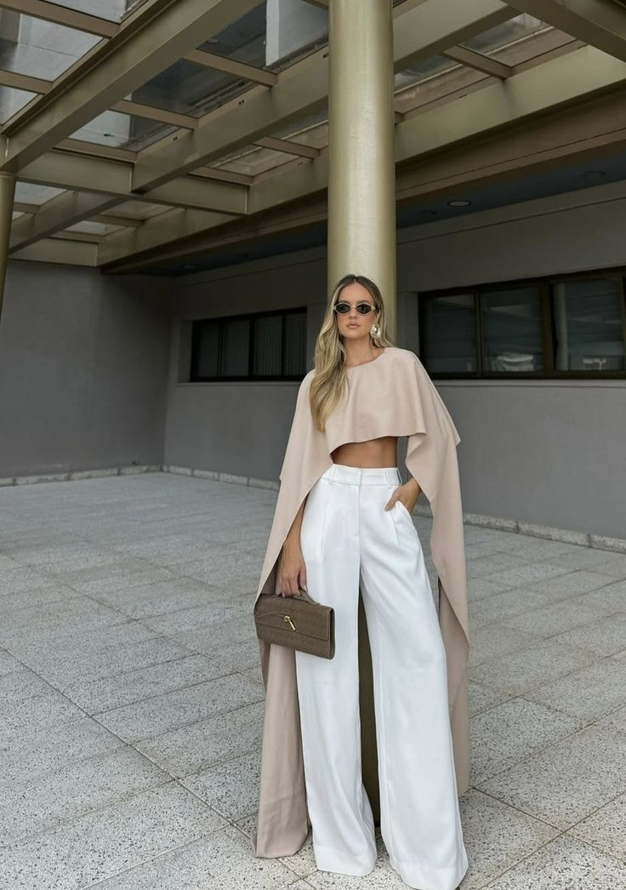
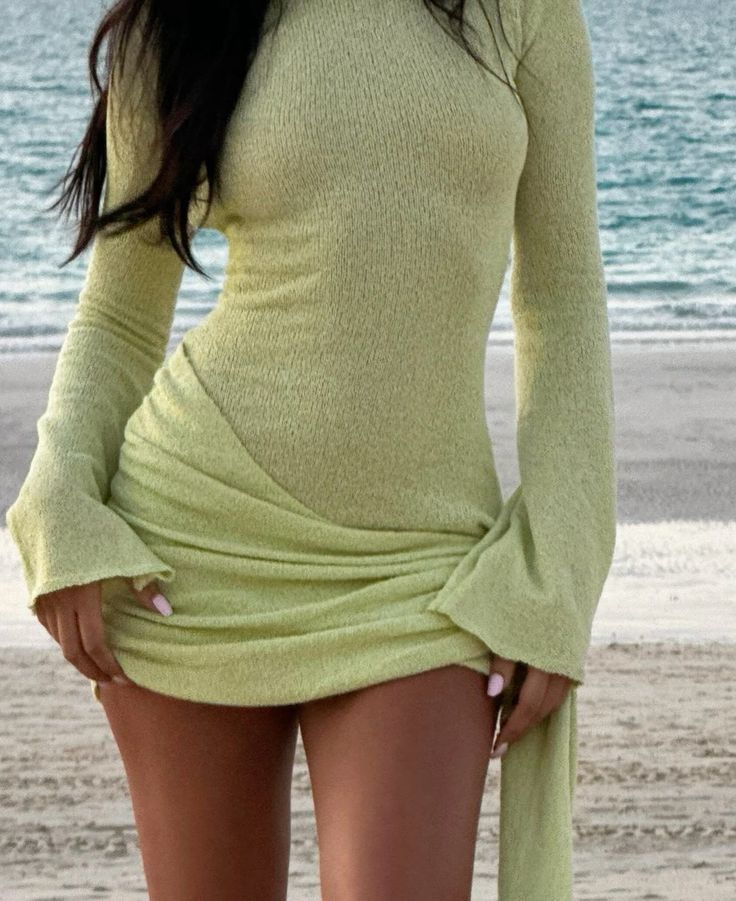
Welcome to the Spring 2025 fashion trends breakdown! This season is all about bold colors, expressive tailoring, and sustainable fabrics. I was very inspired by this video by Delaney Childs, she explores the key runway moments that are shaping what you'll be seeing in stores and on the streets. From vintage-inspired silhouettes to tech-integrated materials, there's something exciting for everyone.
| Trend | Runway | Season |
|---|---|---|
| Satin Scarves | Dolce Gabanna | Spring 2025 |
| Baby Pink | Chanel | Spring 2025 |
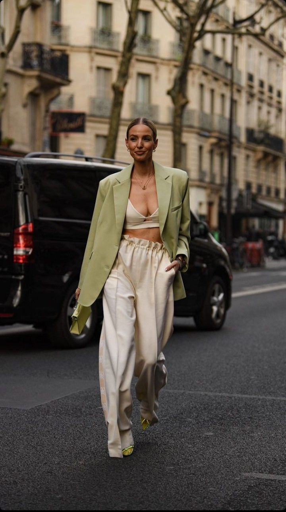
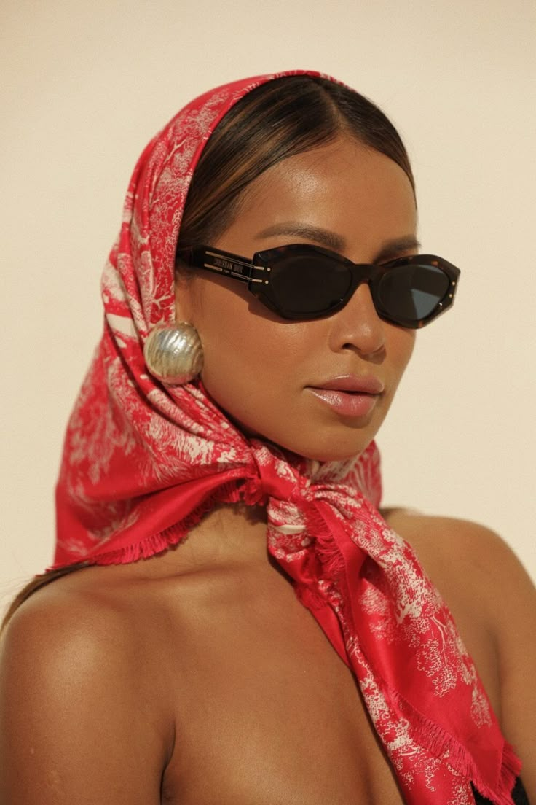
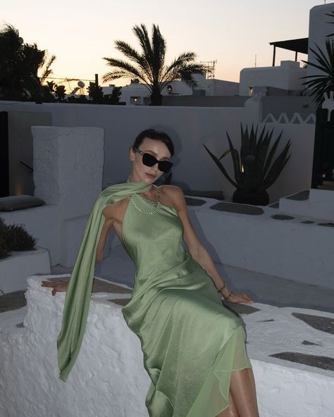
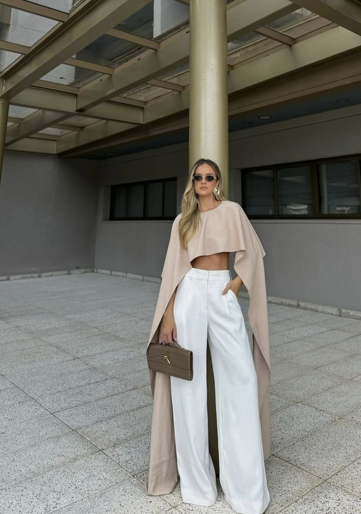
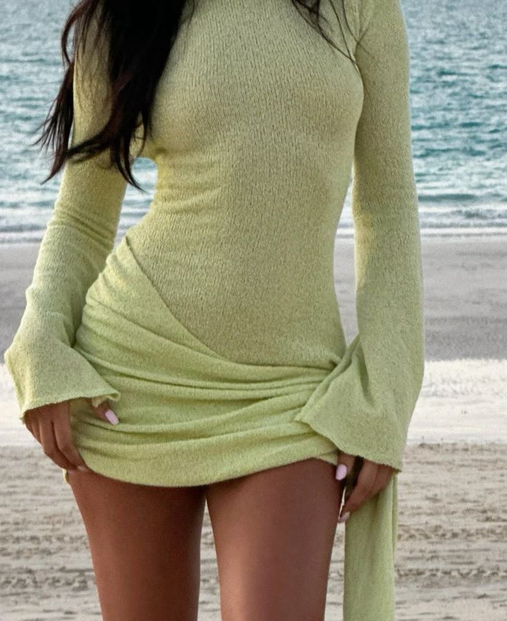